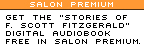

| Find out more | Log in | ||||||||||
|  | ||||||||||
|
How Big Blue fell for Linux | 1, 2, 3, 4 In 1998, the Big Tomato enjoyed a fortuitous propinquity to one of the world's most thriving physical nodes of Internet culture and business. Countless Web-related start-ups clustered in the buildings nearby. Organic Online, the high-end Web production studio that employed open-source star Brian Behlendorf as its chief technical officer, was just a few feet away. So were the offices of Wired magazine, for which Behlendorf, at the tender age of 19, had brought Wired's online adjunct, HotWired, onto the Net. Behlendorf still hasn't strayed far -- Collab.net, his current startup, is just another long block away.
So when people came to visit Behlendorf in his own neighborhood, there was a good chance that the Big Tomato was where they would end up -- which explains why one spring evening in 1998, he had dinner there with two representatives of IBM, James Barry and Yen-ping Shan. In retrospect, the meeting was a dramatic turning point, the moment when the old world and new world of computing met to shake hands. At the time, though, unless you were a very close follower of the nascent open-source scene, you might have been excused for wondering what reason Big Blue could have for setting up a powwow with a ponytailed 24-year-old who split his time between Organic Online and rave DJing. By that summer, Linux-based operating systems had already attracted a huge following, and earlier that spring Netscape had made the dramatic announcement that it would be releasing the source code to its Navigator Web browser. But the traditional corporate world, at least from a managerial standpoint, still didn't seem to know what to make of this hacker frenzy. Software engineers everywhere were already gung-ho, but the suits were a step or two behind. James Barry and Yen-ping Shan weren't your ordinary IBM suits, however. Barry, the product manager for WebSphere, a set of closely related e-business programs, was a jeans-in-the-office kind of guy, and had been employed by IBM for little more than a year. Shan, IBM's chief architect for e-business tools, came from an engineering background. The two men were complementary halves to the same coin. Barry was a gregarious and jovial 43-year-old who in 1998 already had years of experience in online affairs, dating back to a bulletin board he had operated in Boulder, Colo., in the early '90s. He recalls, "Shan was the technical guy who knew a lot about marketing, while I was the marketing guy who knew a lot about the technology." Both men were certain of one thing: It was in IBM's interest to support the Apache Web server, a program developed by a loose group of volunteer programmers led by -- or, more accurately, coordinated by -- Brian Behlendorf. But just getting as far as this meeting had required mastering an internecine political process at IBM that defied ordinary mortal comprehension. Engineers at IBM had been fans of Apache since at least 1996, when it was used as the Web server platform underlying IBM's Web-based front end to the Atlanta Summer Olympic Games. But IBM also owned Lotus software, which had its own Web server program: Domino Go. IBM software executives kept squashing engineering's Apache enthusiasm, tracing their mandate all the way back to the CEO, Lou Gerstner. You've got to eat your own dog food; if IBM had a Web server product, it should be pushing that product and using it for its own servers. The only problem was, practically no one besides IBM itself was using Domino Go, which made it rather unwise to rely on the program as a first step for penetrating other Internet software markets. For months, Barry and Shan had been working to persuade IBM of Apache's strategic advantage. First, Apache was what people were using. Shortly after Barry had been hired, initially as a consultant to evaluate IBM's "middleware"* offerings, he had lectured IBM managers on the fact that Apache was the most popular Web server program on the Internet -- and the single most widely used piece of software for the hosting of Web sites. Even in the Fortune 500, IBM's home territory, more companies were running their Web sites on Apache than on Domino Go. (Though, to be fair, some of those high-profile corporate sites, such as those belonging to Nike and Levi's, were actually being hosted by Organic Online.) Second, although Apache dominated the statistics for publicly accessible Web servers, owning more than 50 percent of a hotly contested market, Microsoft's share was also growing steadily. And again, that growth was occurring in the well-heeled market sector that IBM most lusted after. Apache owned the low end of the market, but Microsoft was gunning for where the money was. If IBM wanted to prevent Microsoft from claiming yet another software market, it needed to join forces with Apache. Third, since so many sites were using Apache, a vast amount of software tools had been created that would work with Apache. And since Apache was both open-source and conformed as closely as possible to all public Internet standards, it was easy to adapt those tools to different software platforms. According to Barry, if IBM came up with a set of software services that worked on top of Domino Go, it took a good deal of code rewriting to get that software to work with either Apache or Microsoft's IIS Web server. By making Domino Go the center of IBM's strategy, it was, in effect, handcuffing itself. For a year and a half -- much of which, say his friends, was spent in the air traveling from IBM office to IBM office -- Barry pushed the open-source strategic imperative to anyone who would listen. If IBM was interested in fending off Microsoft, if it cared at all about creating the widest possible pool of customers for all the fancy e-business services that IBM wanted to offer its customers, then it must get with the real program -- the open-source program, the Apache program. There was just one niggling problem, even after Barry and Shan finally won over higher levels of IBM management: IBM wanted Apache, but did Apache want IBM? Certainly, Brian Behlendorf was cautious. He describes his own state of mind at The Big Tomato that night as "guardedly thrilled." Behlendorf is not by nature a suspicious man, but he was wary. He might still have appeared to be a wet-behind-the-ears Internet hacker, but he knew IBM. His parents had actually met each other while they both worked at IBM -- if anyone had grown up steeped in the culture of the computing industry's most dominant enterprise, it was Behlendorf. IBM had a way of swallowing its collaborators, of overwhelming smaller companies with its phalanxes of sales shock troops and mind-numbing invasions of managers. As a representative of not just the Apache Group, but all of emergent Net culture, Behlendorf couldn't help being restrained in the face of outreach from one of the world's biggest corporations. Behlendorf did not "run" Apache. No one did. Instead, he helped coordinate the efforts of a group of programmers, all of whom for one reason or another needed a good Web server program to help them carry out their day job or hobby, to improve the existing publicly available Web server technology. The original base of code came from the University of Illinois, developed by the same team of programmers that had created Mosaic. But those programmers had moved on en masse to Netscape, which -- at the time of Apache's emergence in the mid-'90s -- was developing, slowly, its own high-priced, proprietary Web server. Meanwhile, as the Web expanded at phenomenal speed, there was a drastic need for improvements to the existing freely available Web server code. All across the Net, webmasters were hacking their own patches* to the code, quick fixes that would help them respond to their daily needs. Finally, a group of these programmers got together, collated all the patches and created "a patchy server" -- Apache. Behlendorf's influence came through his calming presence on Apache-related mailing lists, as the systems administrator for the Apache Web site and as the maintainer of the Apache "source tree"* -- the code base for Apache to which the core group of some 20 programmers had access. His interest always was, and still is, to devise technological means of enhancing collaboration. Lacking the ideology of a Stallman, or the programming skills of a Linus Torvalds (he is quick to say of himself, with a self-deprecating smile, that "I am not a very good programmer"), his motivation has always been to create things that work, that get the job done. Apache got the job done. It wasn't necessarily the best Web server, the fastest, the most powerful or the most secure. But it was still the most widely used, in large part because it handled, simply and effectively (and freely), the tasks that most people needed handling. Of course, IBM had a different set of motivations -- generating revenue being chief among them. So when James Barry told Brian Behlendorf that IBM wanted to use Apache as part of its own family of e-business products, and that it wanted to start contributing to the Apache project, Behlendorf's first reaction, recalls Barry, was defensive. The Apache group did not want a giant corporation to come in suddenly and take over. Yen-ping Shan hastened to sooth him. "I told him," recalls Shan, "that we are going to play by your rules, because we believe that your structure and practice actually works." Shan added that IBM's support could only strengthen Apache. "There are multiple ways IBM is going to help," Shan remembers saying, "not just technologically but as an endorsement that will solidify Apache in the IT [information technology] world. IBM will announce enterprise-level support." Fine. If IBM was going to play by Apache's rules, then that's what it would have to do to win the Apache group's support. To do that would require something a bit more substantive than taking Behlendorf out to dinner. It would require code. IBM had to become a contributor. And it would have to prove itself the way any Apache contributor did, by submitting patches that were accepted by the core as valuable improvements to the Apache code base. And it had to do so in a sensitive way. Behlendorf did not want to see hundreds of patches appearing from scores of IBM engineers. He didn't want IBM to suddenly dominate the open discourse of existing Apache programmers. If IBM wanted one of its employees to become a member of the Apache core (which Barry and Shan's boss had set forth as an essential requirement before greenlighting their mission to Apache), then that employee would have to earn his or her way there like anybody else, by merit, through the quality of his or her hacking. Barry and Shan agreed. It wouldn't be easy. The very concept of an IBM employee contributing code to a project that wasn't owned by IBM raised hackles on legions of IBM lawyers. Traditional software industry policy held that an employer owned everything an employee did, even to the extent of idle thoughts the employee might linger over while showering in the comfort of home. There was also the sticky question of patents -- what if a contribution of code from an IBM engineer included concepts or techniques that had been patented by IBM -- what would happen to those patents if they became part of the public domain? What about liability issues? Barry recalls with a pained grimace the months of meetings that had to be undergone in order to work out such issues. But, credit must be given to IBM's legal team. The issues were worked out. A single programmer, Bill Stoddard, was given the job of being the connection between IBM and Apache -- if any of IBM's programmers came up with a patch, Stoddard reviewed it first, and then he personally submitted to the Apache group. And in the Apache group, good code always won the day. Stoddard's contributions were accepted. IBM was accepted. IBM endorsed Apache, and gave open source an entree into the land of the suits. And Apache endorsed IBM, proving that hackers could work with the biz guys. The announcement of the agreement generated some 1,000 media stories -- which, more than any other fact, Barry recalls with a rueful grin, sealed the deal for upper management. That kind of positive press was by definition a successful strategic move. Today, all three representatives at that meeting have moved on to new jobs. Yen-ping Shan is the chief technical officer at the largest payments-processing firm in the United States. Brian Behlendorf is CTO of Collab.net. And James Barry works a desk about 30 feet from Behlendorf. He is now Collab.net's vice president of strategic development.
|
|
||||||||||||||||||||||||||||||||||||||||||||||||||||||||||||||||||||||||||
|
The Free Software Project | ||||||||||||||||||||||||||||||||||||||||||||||||||||||||||||||||||||||||||||

 Next page |
Next page |  Improve eBusiness operations by quantum leaps
Improve eBusiness operations by quantum leaps Looking for Love?
Looking for Love?